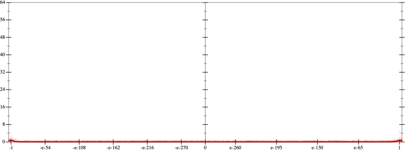
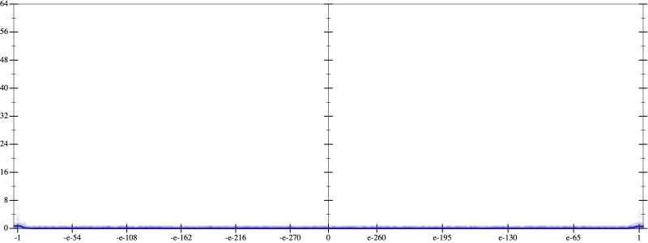
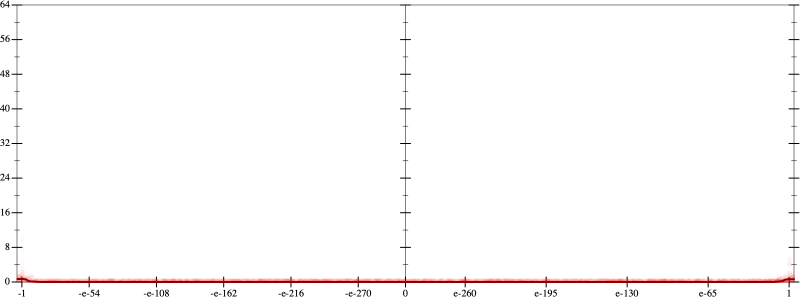
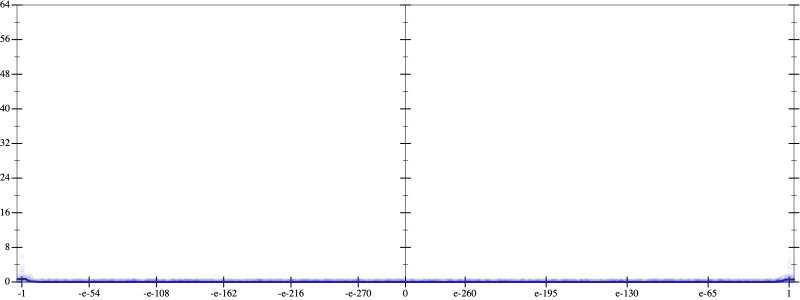

Initial program 0.0
\[\left(\left(\left(30240.0 \cdot x + -80640.0 \cdot \left(\left(x \cdot x\right) \cdot x\right)\right) + 48384.0 \cdot \left(\left(\left(\left(x \cdot x\right) \cdot x\right) \cdot x\right) \cdot x\right)\right) + -9216.0 \cdot \left(\left(\left(\left(\left(\left(x \cdot x\right) \cdot x\right) \cdot x\right) \cdot x\right) \cdot x\right) \cdot x\right)\right) + 512.0 \cdot \left(\left(\left(\left(\left(\left(\left(\left(x \cdot x\right) \cdot x\right) \cdot x\right) \cdot x\right) \cdot x\right) \cdot x\right) \cdot x\right) \cdot x\right)\]
Applied simplify0.0
\[\leadsto \color{blue}{\left(\left(x \cdot x\right) \cdot \left(\left(x \cdot x\right) \cdot \left(x \cdot 48384.0\right)\right) + \left(30240.0 \cdot x + \left(-80640.0 \cdot x\right) \cdot \left(x \cdot x\right)\right)\right) + \left(\left({x}^{3} \cdot {x}^{3}\right) \cdot x\right) \cdot \left(-9216.0 + x \cdot \left(512.0 \cdot x\right)\right)}\]
Taylor expanded around 0 0.0
\[\leadsto \left(\left(x \cdot x\right) \cdot \left(\left(x \cdot x\right) \cdot \left(x \cdot 48384.0\right)\right) + \left(30240.0 \cdot x + \left(-80640.0 \cdot x\right) \cdot \left(x \cdot x\right)\right)\right) + \color{blue}{\left(512.0 \cdot {x}^{9} - 9216.0 \cdot {x}^{7}\right)}\]
Applied simplify0.0
\[\leadsto \color{blue}{\left(x \cdot x\right) \cdot \left(x \cdot -80640.0 + \left(x \cdot 48384.0\right) \cdot \left(x \cdot x\right)\right) + \left(\left(x \cdot 30240.0 + {x}^{9} \cdot 512.0\right) - 9216.0 \cdot {x}^{7}\right)}\]
- Using strategy
rm Applied distribute-lft-in0.0
\[\leadsto \color{blue}{\left(\left(x \cdot x\right) \cdot \left(x \cdot -80640.0\right) + \left(x \cdot x\right) \cdot \left(\left(x \cdot 48384.0\right) \cdot \left(x \cdot x\right)\right)\right)} + \left(\left(x \cdot 30240.0 + {x}^{9} \cdot 512.0\right) - 9216.0 \cdot {x}^{7}\right)\]
Applied associate-+l+0.0
\[\leadsto \color{blue}{\left(x \cdot x\right) \cdot \left(x \cdot -80640.0\right) + \left(\left(x \cdot x\right) \cdot \left(\left(x \cdot 48384.0\right) \cdot \left(x \cdot x\right)\right) + \left(\left(x \cdot 30240.0 + {x}^{9} \cdot 512.0\right) - 9216.0 \cdot {x}^{7}\right)\right)}\]
 
